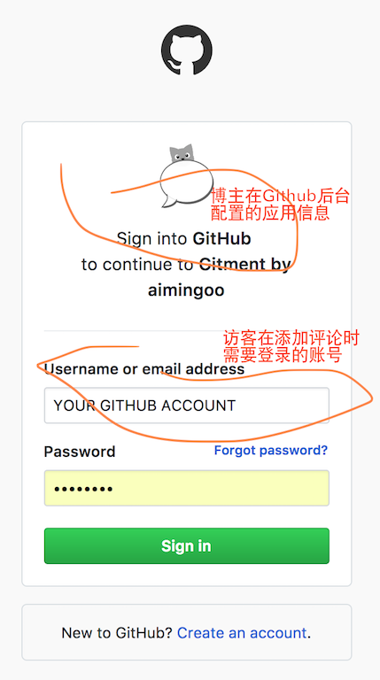
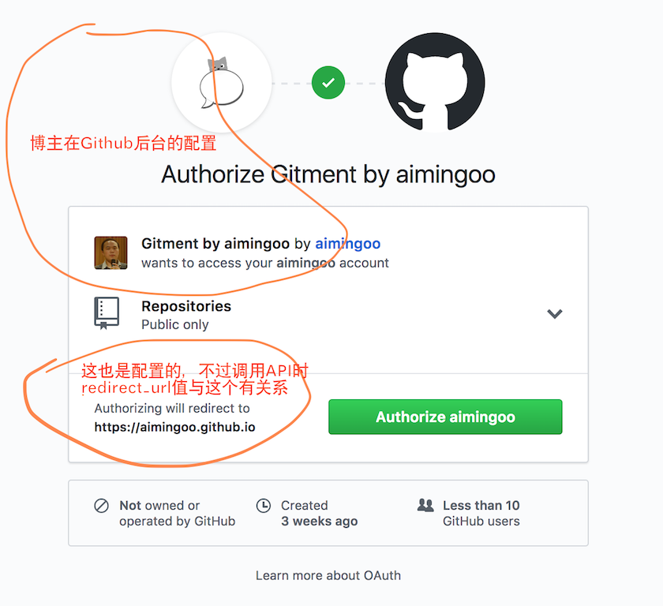

本来我接下来只是想在博客中加上一个支持评论的功能（使用Gitment），然而诸多的尝试之后，我却发现我需要创建一个支持https的web站点……
这一切的目的，只是使得我们的Gitment有跨域访问的Api接口可用。
8. 问题出在哪里
Gitment（项目）是极棒的一个利用Github Issues来实现博客评论功能的项目，作者（https://imsun.net/）在介绍中特别提到，这种对Issues功能的使用方法是Github团队支持许可的。这也意味着只要你能接受以下两点可能存在的限制/隐患，你就可以长期地使用它：
- Github真的可能被屏蔽，尽管这种可能性已经越来越小
- 要发表评论的话必须先注册Github的账号，不过浏览评论是不受限制的
但是使用Gitment是有问题的。更准确地说，如果你直接在你的博客中部署Gitment这个项目，那么你将面临你的Github application client secret token丢失的风险。这个风险会带来两种可能，一种是你自己的Github账户下的application被假冒，另一种是在你的博客上发表评论的Github用户被冒名。
这个风险看起来很大。而这对于Gitment来说又难于避免，因为它要求你在使用时往博客模板中插入以下代码：
var gitment = new Gitment({
id: '页面 ID', // 可选。默认为 location.href
owner: '你的 GitHub ID',
repo: '存储评论的 repo',
oauth: {
client_id: '你的 client ID',
client_secret: '你的 client secret',
...
这个client_secret来自于你在自己的Github个人配置Settings -> Developer Settings -> OAuth applicatoins中创建一个application时所生成的secret，这个secret提供了所谓的单点登录认证，以确保其它的Github用户在经过同意后使用你的博客中的Gitment模块来发评化——这种用法类似于新浪、微信、QQ等等的小应用。
通常你需要这个secret有访问者的repo级别的访问权限（因为添加评论其实上是向repo的issues中添加comments），而一旦有人劫持了访问者的access_token，那么它就可以仿冒访问者在任意的github仓库中添加comments、以及issues——看起来很可怕不是？而且事实上看起来这个权限还更大，可以操作访问者自己的仓库。
Gitment的作者为什么要留下这么一个漏洞呢？Github又为什么会允许这样一个漏洞存在呢？
8.1 Gitment干了什么？
其实Gitment的作者是好心的。他在源代码中是这么写的：
this.state.user.isLoggingIn = true
http.post('https://gh-oauth.imsun.net', {
code,
client_id,
client_secret
}, '')
.then(data => {
this.accessToken = data.access_token;
...
这段代码的意思，是拿你在Github后台生成的一对client_id/client_secret验证信息，去https://gh-oauth.imsun.net上面换取access_token，而这个access_token才是当前登录的Github用户在你的博客用发评论时使用的验证信息。这个access_token会记录在cookies中，并且每次调用Github api时作为Authorization头信息提交给Github验证身份。
你把client_id和client_secret同时给了imsun.net，这是不对的；即使你信任imsun.net，然而把它公布在源代码中，也是不对的。——所以，事实上如果你在博客中部署了上述代码，你还会收到来自Github的一封邮件，提醒你不应该将token放在源代码中（是的，Github会扫描提交的源代码）。
Gitment的作者并不是不知道这个问题，他只是好心的想帮你解决一个问题——这个我们下面会讲到——然而他带来了更严重的问题。
8.2 深入了解Github的单点登录和应用授权
如果你在Github站外使用它的单点登录（也就是提示你用Github账户登录以使用某种功能），那么在这个网页中——其实也可以不是前端的网页，而是后端应用——需要调用Github API，来将当前用户引导到下面的Github的登录和授权页面：
GET https://github.com/login/oauth/authorize
?scope=(权限范围, Gitment预设的是'public_repo')
&client_id=(验证应用的client_id)
&redirect_url=(验证成功后的返回url, Gitment预设的是当前页)
这时，（如果当前用户/访客没有登录过，那么）它看到的页面是下面这样的：
（界面1：跨站应用的单点登录界面）

如果访客还没有为这个应用授权过（或者他已经是Github的登录用户），那么他之后还会看到下面这个界面：
（界面2：授权）

这两步的目的就是让访客登录，并且让他确认你的应用（例如Gitment）能够使用他的账号中的哪些权限。一旦用户确认过这个授权，那么在他的Github账号后台Settings -> Authorized OAuth Apps中就可以看到这个应用（也能Revoke掉它），并且下次就不用再确认授权了。
注意到上述'will redirect to'的地址——它在使用API提交时的配置细节在Github API的说明中有（在这里），简单地说它必须以Application在后台的配置作为前缀。在我们这里讨论的Gitment中，作者将它设置为当前正在访问的网页——例如某篇博客文章（Post）。
接下来如果Github验证并授权了访问的账户，它就会通过HTTP调用来返回304并带上一个Location地址，这个地址就是上面的redirect_url，并且会在这个url后面多带一个code参数。以我的站点上的某个具体的post来说，返回的时候这个Header是下面这样的：
Location:https://aimingoo.github.io/1-1718.html?code=40299d8475d3679c8c8c
在静态页面（例如1-1718.html）中从url取参数的方法就不用细讲了。于是接下来Giment取到这个参数code，它还需要再做一次验证，才能真正的让当前用户能够使用Github API。这个验证操作需要调用：
POST https://github.com/login/oauth/access_token
client_id: ...
client_secret: ...
code: ...
并且它使用POST请求的Accept header来决定以何种格式（xml/json/url-encode）来返回数据。显然地，这里需要在浏览器中使用AJAX请求来向https://github.com/调用这个API。
问题就出在这一步。
8.3 Github OAuth并不支持浏览器跨站访问
如果你在命令行上或者其它代码中直接访问上述POST API，那么不错，你能拿到返回数据access_token，然而不幸的是：Gitment在浏览器上，只能使用Ajax。
事实上Gitment可以调用上述API并返回数据，但是注意发起这个API的地址（以上面的post为例）与调用的Github API地址分别是：
https://aimingoo.github.io/1-1718.html
https://github.com/login/oauth/access_token
于是浏览器说：这是一个跨站访问！浏览器会把POST请求拆成两个，先发一枚OPTIONS请求问问github.com是否支持跨站，如果github.com接受了OPTIONS并正确返回，那么浏览器才接下来发POST请求。——OPTIONS请求是没有POST BODY区的，显示这是为了浪费服务器接受大型的POST请求时浪费资源。关于这个过程的细节，可以参考阮一峰老师的文章『跨域资源共享 CORS 详解』。简单地说，服务器端对OPTIONS和POST请求都必须在返回头中包括Access-Control-Allow-Origin字段，并使该字段带有正确的来源Origin信息。——这样一来，浏览器就会认为服务器是接受跨站访问的了。
然而Github的access_token接口并不返回上述头。而且，可以预见的将来，它都不会有这个头。因为这是正确的——我们确实不应该在浏览器上直接使用这个接口，并且公开接口中的client_secret。从另一方面来说，这个access_token接口是应该在一个浏览器用户受信的后端应用中，亦即是我们称为Gitment模板的应用内部发起调用的，它可以持有client_secret而不必告诉任何人，这是Github确认『该应用合法』的唯一凭据。
Gitment没有办法同时做到两件事：
- 既可以使用一个惟一、统一的Giment client_secret凭据，
- 又在redirect_url中指定某个非确定的博客返回地址。
这使得作者无法公开发布一个公众使用的、不需要每个博主去Github后台配置OAuth Application服务的应用。而接下来，作者也有没办法在没有client_secret凭据的情况下，帮你调用Github's access_token接口。
所以，你看到了结果：Gitment的代码要求在网页中泄露你的client_secret，然后提交到https://gh-oauth.imsun.net去，作者会帮助你调用Github API，然后返回一个access_token。
只有这样，当前的访问才能用这个access_token为每一个XHR Request建立有效的Authorization头。
问题的根源，仅仅是出在Github OAuth并不支持浏览器跨站访问——它的返回头用没有Access-Control-Allow-Origin。
8.4 API网关
显然，这绝壁了就是API网关要干的事情。如果我有一个API网关，那么我就只需要接受来自浏览器的Gitment请求，然后将API转发到Github，并且在返回头上塞上一个Access-Control-Allow-Origin就万事大吉了！
是的，这是对的。不幸的是，没有这么个东东——而且要开放可信的。
我尝试过阿里云的API网关！很牛x的产品，价格也不贵，而且配置操作一路极顺畅，Ding dong Ding dong分分钟就建好了网关，但是——不能定制返回的HTTP Header！
我尝试过微软Azure里的API网关！也很牛x产品，骗了我一块钱人民币，居然让我连配置都完不成——最最反程序员的产品就非它莫属了。
我尝试过很多很多云服务或云端微服务的API网关产品，要么是根本连页面都打不开的，要么就是不支持CORS跨站的。简单地说：你就算想花钱也是花不出去的。
不过真想花钱，还是有一个法子的。你可以租一台虚拟主机，然后在上面架一个Nginx，通过配置来代理这个POST请求并在返回中加上Access-Control-Allow-Origin头。是的，这相当不错，连代码也不用写。但是搞云主机啊，分分钟收钱的。——你的API能访问几次？一个小小小小得不得了的博客，一个月能用10来条评论就不错了，调用上面的登录接口，大概也就三五次吧！
不值当搞台云主机啊！
于是，我说：
8.5 写点代码吧，Sir
要写点代码就其实很好办了，用NodeJS也好、PHP/ASP也行，其实甚至BASH脚本都搞得定。只需响应前端（frontend）来的POST请求，然后去Github API接口（backend）上拿数据，在返回前端之前塞上个Header就行了。
不过具体要做起来，就麻烦一点了。我用PHP写了一个名为intersect的项目（在这里），它修改自CORSica，不过添加了不少的特性：
- HTTPS POST支持
- 添加可配置字段（例如为Github API添加client_secret）
- 处理前后端不同的Connection方法
- 处理Transfer-Encoding
- 处理Content-Length的变化
- 一些防止滥用的简单guard代码
- ...
基本上，我的意思是说，它简单的配置下就可用了；而且稍作定制，也可以作为一个通用的CORS网关。所以，接下来，你就需要找一个能放PHP代码的免费主页，然后把intersect放上去，配置其中的DOMAIN_ACCEPT和PRIVATE_CLIENT_SECRET。这样这个网站就能拿来替代Gitment中对https://gh-oauth.imsun.net的访问了。
当然，Gitment还需要稍稍的改点代码。
这个我们回头再说，现在我们得搞一个提供免费主页的网站把这个代码放上去。